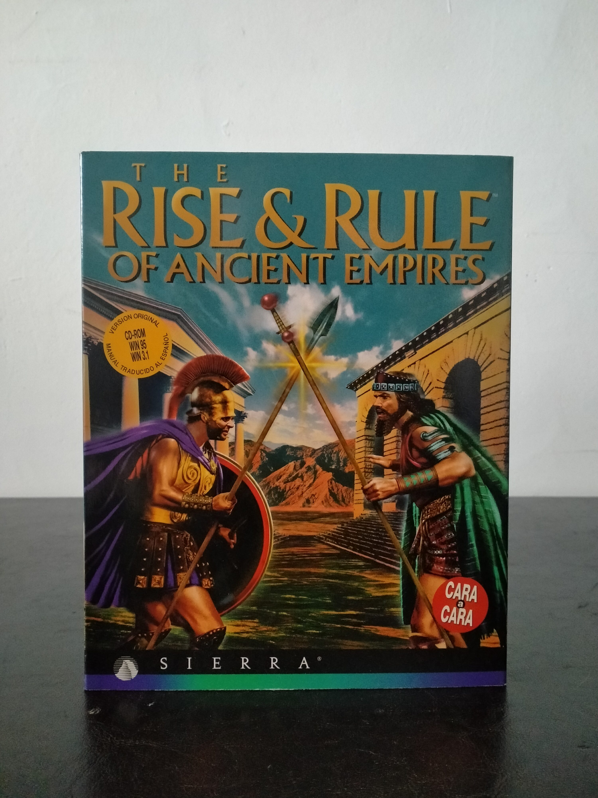

Ficha #000072
The Rise & Rule of Ancient Empires
The Rise & Rule of Ancient Empires es un juego de estrategia histórica desarrollado por Impressions Games y publicado por Sierra en la segunda mitad de los años noventa. Ambientado en la Antigüedad, permite dirigir civilizaciones clásicas mediante expansión territorial, desarrollo económico, diplomacia, comercio, investigación y conflicto militar. Su propuesta se sitúa dentro de la línea de estrategia histórica para PC previa a la consolidación masiva del RTS moderno, con un enfoque más pausado y de gestión imperial. Esta edición española en caja grande para CD-ROM conserva especial interés documental por incluir manual traducido al español y compatibilidad indicada para Windows 3.1 y Windows 95.
- Formato
- Big Box
- Plataforma
- Win3.x Win95
- Género
- Estrategia Estrategia histórica Gestión de imperios
- Serie
- Todos Big Box
- Desarrollador
- Impressions Games
- Distribuidor
- Sierra
- EAN
- —
Contenido de la edición
- Caja Big Box
- CD-ROM en caja jewel case
- Manual de juego
- Tarjeta de referencia
- Catálogo
Preservación
- Protección
- No determinado
- Formato recomendado
- BIN/CUE
- Jugable en virtualización
- Sí
Preservación recomendada mediante imagen completa del CD-ROM original y digitalización de la documentación impresa asociada. No hay evidencia suficiente en la edición mostrada para confirmar un sistema anticopia concreto.